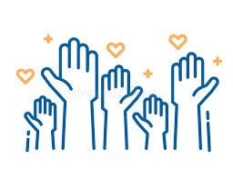

About Us
Mission:
At HelpHub, our mission is to bridge the gap between compassionate individuals
and the organizations that need them most.
We provide a simple, accessible platform where volunteers can find meaningful
opportunities to support local charities, nonprofits, and community-driven initiatives.
By making volunteerism easy and impactful, we aim to create stronger, more connected communities where
everyone has the chance to contribute, grow, and make a difference.

Approximately 60 million Americans volunteer every year.
Studies show that volunteering can improve your mental health, reduce stress, and even increase longevity.
More than 8 billion hours of volunteer service occurs every year.
About HelpHub:
At HelpHub, we believe that every small act of kindness
can create a ripple of change in our communities.
Founded by a passionate team of volunteers and community advocates,
our mission is to connect generous hearts with local charities in need of support.
Whether you're looking to lend a hand at a food bank, mentor youth, or participate in environmental
clean-ups, HelpHub makes it easy to find opportunities that resonate with your interests and schedule.
We envision a world where every individual can discover their unique way to contribute, fostering a
culture of compassion and collaboration. Join us in making a difference, one connection at a time!